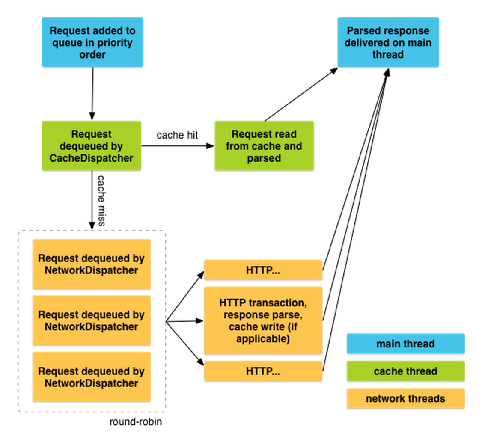

Android Async HTTP Client
...or How I learnt to do not reinvent the wheel
Nicola Corti Google Developer Group Pisa
Is this talk for you...?
- Are you an Android/Java Developer?
- Have you ever done an HTTP request?
- ...are you still using plain HttpUrlConnection?
Android Vanilla
Prior to Froyo, HttpURLConnection had some frustrating bugs. In particular, calling close() on a readable InputStream could poison the connection pool...
...the large size of this API makes it difficult for us to improve it without breaking compatibility. The Android team is not actively working on Apache HTTP Client.
public static JSONObject requestRestResponse() {
HttpURLConnection urlConnection = null;
try {
// create connection
URL urlToRequest = new URL("http://mybackend.com/v1/req");
urlConnection = (HttpURLConnection)
urlToRequest.openConnection();
urlConnection.setConnectTimeout(CONNECTION_TIMEOUT);
urlConnection.setReadTimeout(DATARETRIEVAL_TIMEOUT);
// handle issues
int statusCode = urlConnection.getResponseCode();
if (statusCode == HttpURLConnection.HTTP_UNAUTHORIZED) {
// handle unauthorized (if service requires user login)
} else if (statusCode != HttpURLConnection.HTTP_OK) {
// handle any other errors, like 404, 500,..
}
// create JSON object from content
InputStream in =
new BufferedInputStream(urlConnection.getInputStream());
return new JSONObject(getResponseText(in));
} catch (MalformedURLException e) {
// URL is invalid
} catch (SocketTimeoutException e) {
// data retrieval or connection timed out
} catch (IOException e) {
// could not read response body
} catch (JSONException e) {
// response body is no valid JSON string
}
return null;
}} finally {
if (urlConnection != null) {
// Don't forget to release resources
urlConnection.disconnect();
}
}
return null;
}
Don't forget about NetworkOnMainThreadException. The most common solution for this kind of problems are AsyncTasks!
Have you ever wrote?
@Override
protected void onPostExecute(String result) {
if (getActivity() == null){
return; // Here Activity is gone...
}
...
}
- Request cancellation
- Parallel request
- Scheduling
- Caching
- ...and boilerplate?
HTTP Client libraries
If you have more than
1K lines
of code for creating and handling your HTTP requests...
Ask yourself if you're doing it right!
- Retrofit
- Volley
- OkHTTP
- Picasso
- ...and more
Retrofit 2.0
- From square.github.io
- Works with Java Annotations
- Support both Sync/Async execution
- Apache 2 Licensed
- Recently released (2016-03-11 v2.0.0)
compile 'com.squareup.retrofit2:retrofit:2.0.0'
Usage
public interface GitHubService {
@GET("users/{user}/repos")
Call<List<Repo>> listRepos(@Path("user") String user);
}
Retrofit retrofit = new Retrofit.Builder()
.baseUrl("https://api.github.com/")
.build();
GitHubService service = retrofit.create(GitHubService.class);
public interface GitHubService {
@GET("users/{user}/repos")
Call<List<Repo>> listRepos(
@Path("user") String user);
@GET("users/{user}/repos")
Call<List<Repo>> listRepos(
@Path("user") String user,
@Query("type") String type);
@GET("users/{user}/repos")
Call<List<Repo>> listRepos(
@Path("user") String user,
@QueryMap Map<String, String> options);
}
public interface GitHubService {
@Headers("User-Agent: my-Awesome-Retrofit-powered-app")
@GET("users/{user}/repos")
Call<List<Repo>> listRepos(@Path("user") String user);
@GET("gists/public")
Call<List<Gist>> listGists(@Header("User-Agent") String uAgent)
}
public interface GitHubService {
@GET
Call<List<User>> getCustomUsers(@Url String reqUrl);
@POST("gists")
Call<Gist> createGist(@Body GistRequest grequest);
}
Converters
- Gson
com.squareup.retrofit:converter-gson - Jackson
com.squareup.retrofit:converter-jackson - Moshi
com.squareup.retrofit:converter-moshi - Protobuf
com.squareup.retrofit:converter-protobuf - Wire
com.squareup.retrofit:converter-wire - Simple XML
com.squareup.retrofit:converter-simplexml
You can also implement yours with Converter.Factory
Retrofit retrofit = new Retrofit.Builder()
.baseUrl("https://api.github.com/")
.addConverterFactory(JacksonConverterFactory.create())
.build();
service = retrofit.create(GitHubService.class);
Gson gson = new GsonBuilder()
.setDateFormat("yyyy-MM-dd'T'HH:mm:ssZ")
.create();
Retrofit retrofit = new Retrofit.Builder()
.baseUrl("https://api.github.com/")
.addConverterFactory(GsonConverterFactory.create(gson))
.build();
service = retrofit.create(GitHubService.class);
Call Adapters
You can plug a Call Adapter to work with:
- Observables (RxJava)
- ListeanableFuture (Guava)
- CompletableFuture (Java8)
// Sync call
Call<Repo> call = service.loadRepo();
Response<Repo> response = call.execute();
// Async call
Call<Repo> call = service.loadRepo();
call.enqueue(new Callback<Repo>() {
@Override
public void onResponse(Response<Repo> response) {
// Get result Repo from response.body()
}
@Override
public void onFailure(Throwable t) {
// Handle failure
}
});
Retrofit retrofit = new Retrofit.Builder()
.baseUrl("https://api.github.com/")
.addCallAdapterFactory(RxJavaCallAdapterFactory.create())
.build();
public interface APIService {
@GET("gists/public")
Call<Gists> getGists();
@GET("gists/public")
Observable<Gists> getGistsRx();
}
getGistsRx().subscribeOn(Schedulers.io())
.observeOn(AndroidSchedulers.mainThread())
.subscribe(gists -> {
Toast.makeText(getApplicationContext(),
"Fetched gists: " + gists.size(),
Toast.LENGTH_SHORT).show();
});
1 vs 2
1 vs 2
Interface Declaration
public interface GitHubService {
@POST("/list")
Repo loadRepo();
@POST("/list")
void loadRepo(Callback<Repo> cb);
}
public interface GitHubService {
@POST("/list")
Call<Repo> loadRepo();
}
OkHttp Interceptors
HttpLoggingInterceptor interceptor = new HttpLoggingInterceptor();
// Choose desired logging level
interceptor.setLevel(HttpLoggingInterceptor.Level.BODY); // Or FULL
OkHttpClient client = new OkHttpClient.Builder()
.addInterceptor(interceptor).build();
Retrofit retrofit = new Retrofit.Builder()
.baseUrl("https://api.github.com/")
.client(client)
.build();
compile 'com.squareup.okhttp3:logging-interceptor:3.2.0'Certificate Pinning
OkHttpClient client = new OkHttpClient.Builder()
.certificatePinner(new CertificatePinner.Builder()
.add("example.com", "sha1/DmxUShsZuNiqPQsX2Oi9uv2sCnw=")
.add("example.com", "sha1/SXxoaOSEzPC6BgGmxAt/EAcsajw=")
.build())
.build();
Use CertificatePinner to restrict which certificates and certificate authorities are trusted.
Certificate pinning increases security, but limits your server team’s abilities to update their TLS certificates.
Do not use certificate pinning without the blessing of your server’s TLS administrator!
...and more!
- OkHTTP as default RAW HTTP Client
- GSON Converter not by default
- New URL resolving mechanism
- setEndpoit baseURL
- RestAdapter Retrofit
- Dynamic URLs
- Request cancellation
call.cancel();Volley
- From Google
- Available from the AOSP repo
- Excellent for populating the UI with text and images
- Excellent for caching
- Apache 2 licensed
- Not well documented :(
compile 'com.android.volley:volley:1.0.0'
Thread model
Usage
RequestQueue queue =
Volley.newRequestQueue(getApplicationContext());
StringRequest request = new StringRequest(
Request.Method.GET,
"https://api.github.com/gists/public",
this::handleResponse,
this::handleError);
request.setShouldCache(true);
request.setTag(requestTag); // A class member 'requestTag'
queue.add(request);
@Override
protected void onStop() {
queue.cancelAll(requestTag);
super.onStop();
}
Don't forget to do it!
ImageLoader mImageLoader;
NetworkImageView mNetworkImageView;
private static final String IMAGE_URL =
"http://i.imgur.com/RLKixQW.png";
// Retrieve the ImageLoader (singleton/application/...)
// Retrieve the NetworkImageView (findViewById)
mNetworkImageView.setImageUrl(IMAGE_URL, mImageLoader);
<com.android.volley.toolbox.NetworkImageView
android:id="@+id/networkImageView"
android:layout_width="300dp"
android:layout_height="300dp"
android:layout_centerHorizontal="true" />
mImageLoader = new ImageLoader(mRequestQueue,
new ImageLoader.ImageCache() {
private final LruCache<String, Bitmap> cache = new LruCache<>(20);
@Override
public Bitmap getBitmap(String url) {
return cache.get(url);
}
@Override
public void putBitmap(String url, Bitmap bitmap) {
cache.put(url, bitmap);
}
});
~$ adb shell setprop log.tag.Volley VERBOSE
D/Volley (670 ms) [ ] https://api.github.com/users/cortinico
D/Volley (+0 ) [ 1] add-to-queue
D/Volley (+0 ) [238] cache-queue-take
D/Volley (+0 ) [238] cache-miss
D/Volley (+10 ) [242] network-queue-take
D/Volley (+630 ) [242] network-http-complete
D/Volley (+0 ) [242] network-parse-complete
D/Volley (+0 ) [242] network-cache-written
D/Volley (+0 ) [242] post-response
D/Volley (+30 ) [ 1] done
D/Volley (10 ms) [ ] https://api.github.com/users/cortinico
D/Volley (+0 ) [ 1] add-to-queue
D/Volley (+0 ) [238] cache-queue-take
D/Volley (+0 ) [238] cache-hit
D/Volley (+0 ) [238] cache-hit-parsed
D/Volley (+0 ) [238] post-response
D/Volley (+10 ) [ 1] done
Which client?
- Want less and elegant code? ...Retrofit!
- Want control over scheduling/caching? ...Volley!
- Want image management? Volley! ...or Retrofit + Picasso
- Default choose? ...Retrofit!